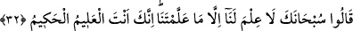
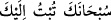

eder. Çünkü melekler üstünlüklerini iddia ederek daha yaratılmadan insanın yapacağı
fesadlar hakkında bilgi vermişlerdir. Ne var ki, eşyânın isimlerini bilmekte bile âciz
kalınca yaptıkları işin mânâsız olduğunu anlamışlardır.
Ey iddiâ sâhibleri, dâ’vânız nerede? Ey mârifet sâhibleri, muhabbetiniz nerede? Ey
muhabbet sâhibleri tâatiniz nerede?
Ebû Bekir el-Vâsıtî (k.s.) demiştir ki: “Kul Allah’ı tanırsa O’nu sever, O’nu sevince
zikreder. Zikredince zikrin tadını alır. Zikrin tadını aldıktan sonra kulun başka şeylerle
uğraşması mümkün değildir.”
“Melekler kendilerine sorulan eşyâların isimlerini bilebildiler mi, yoksa bundan âciz
mi kaldılar?” gibi akla gelecek bir soruya cevap olarak; âyet meleklerin şöyle dediğini
bize bildiriyor.
32. Melekler: Yâ Rab! Seni noksan sıfatlardan tenzîh ederiz, Senin bize
öğrettiklerinden başka bizim bilgimiz yoktur. Şüphesiz alîm ve hakîm olan ancak
sensin, dediler.
Sübhâneke lâfzı tevbeden önce kullanılan bir lâfızdır. Nitekim Yûnus (a.s.)
“Senden başka ilâh yoktur. Sen eksikliklerden
uzaksın, yücesin, ben zâlimlerden oldum.” (el-Enbiyâ, 21/87) Mûsâ (a.s.)’ da: (
) “Sen yücesin, sana tevbe ettim” (el-A’râf, 7/143) diye “Sübhan”
lafzını zikrederek tevbe etmişlerdir.[234]
“Seni tenzîh ederiz, öğrettiğinden başka bizim bir bilgimiz yoktur.” demekle
melekler acziyetlerini i’tirâf etmişlerdir. Âyet, meleklerin sorularıyla Allah’a itiraz
maksadı taşımadıklarını, bilmediklerini öğrenmeye çalıştıklarını gösterir. Zira, kendi
âlemlerine ve kabiliyetlerine uygun olmayan ilimlere sahib olmadıklarını,
kabiliyetlerine uygun olan ilmi zâten Allah’ın kendilerine öğreteceğini söylemektedirler.
[235]
Allah herşeyi öylesine bilir ki, ona hiçbir sır gizli kalmaz. Meleklerin cevaplarından
“Şüphesiz ben sizin bilmediklerinizi bilirim” âyetinin mânâsını kavradıklarını
anlıyoruz.
“Ve Hakimsin”; herşeyi hikmetle yaratırsın, hikmeti olmayan hiçbir iş yapmazsın.
Âyet bunlardan başka şu noktaları da vurgulamaktadır:
1. Allah fazl ve ihsan sâhibi, kul ise nâkısdır.
2. Kul bilmediği konuda açıkça “bilmiyorum” demelidir.
3. Bildiği bir şeyi de saklamamalıdır.